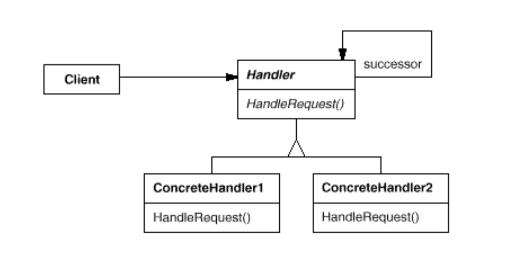

Chain Of Responsibility
일련의 객체 집합이 잘 정의된 통로(chain)를 통해 메시지를 전달함으로써 하나 이상의 객체에 메시지를 처리할 수 있는 기회를 준다. 주어진 메시지에 가장 적합한 객체가 메시지를 처리한다. 또한 하나 이상의 객체가 메시지를 처리하는 것도 가능하다.
구성
- Handler
- 이벤트 처리 인터페이스와 다음 이벤트 처리 객체로의 링크를 정의한다.
- Concrete Handler
- 요청을 처리, 혹은 아무 일도 하지 않고 이벤트를 다은 객체로 포워딩한다.
- Client
- 체인에 있는 Concrete Handler객체에 요청을 보낸다.
구조

장단점
- 체인에 새로운 핸들러를 추가하거나 핸들러의 순서를 바꿈으로써 프로그램의 동적 행동 양식을 쉽게 바꿀 수 있다.
- Handler 클래스가 서로를 알 필요가 없다면 프로그램의 객체 간 결합도를 줄일 수 있다.
- 많은 구현체가 메시지 핸들러를 만들기 위해 구현 상속을 사용할 것을 강제한다. 이는 Handler 간에 부적절한 강결합을 유도하고 깨지기 쉬운 기반 클래스 문제를 야기한다.
예제
예제 코드 보기